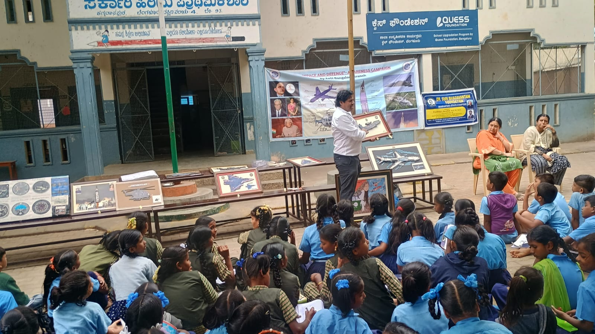
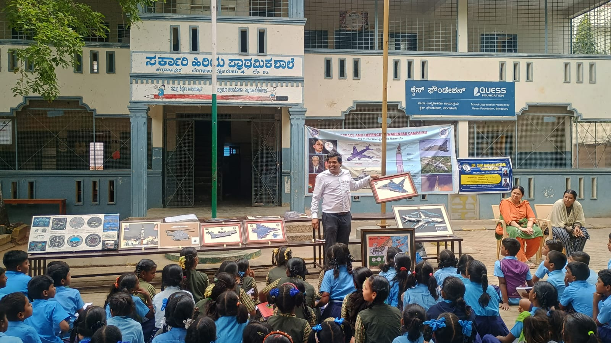
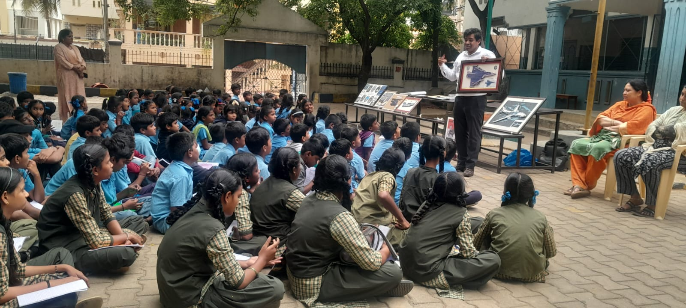
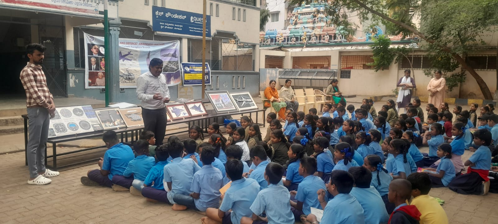
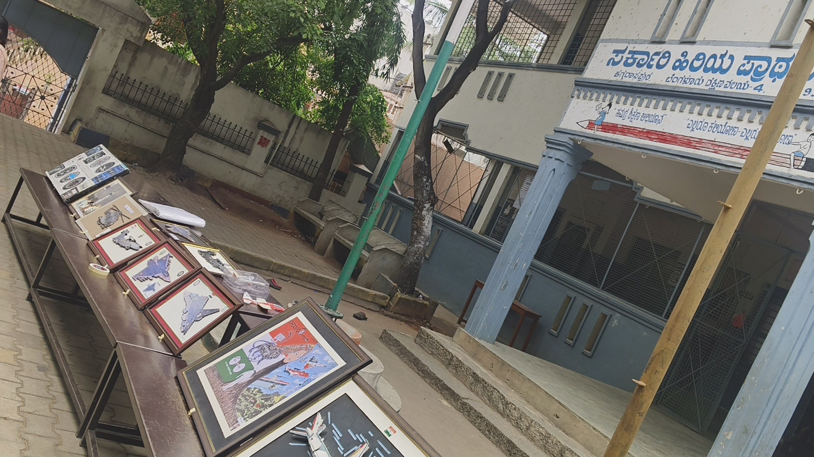
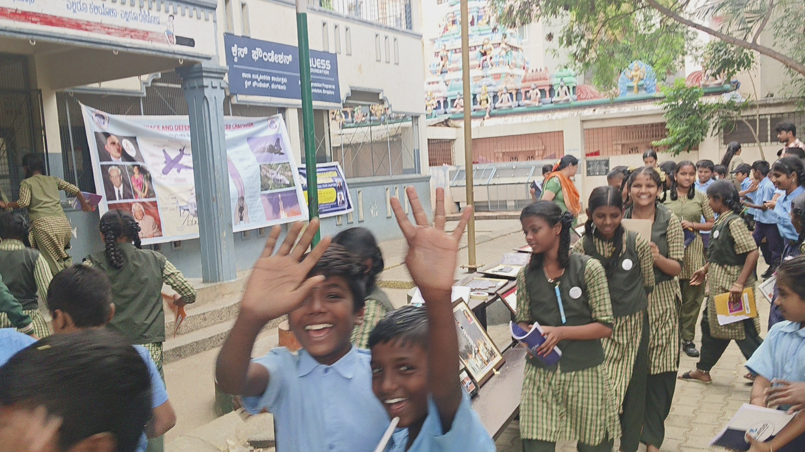
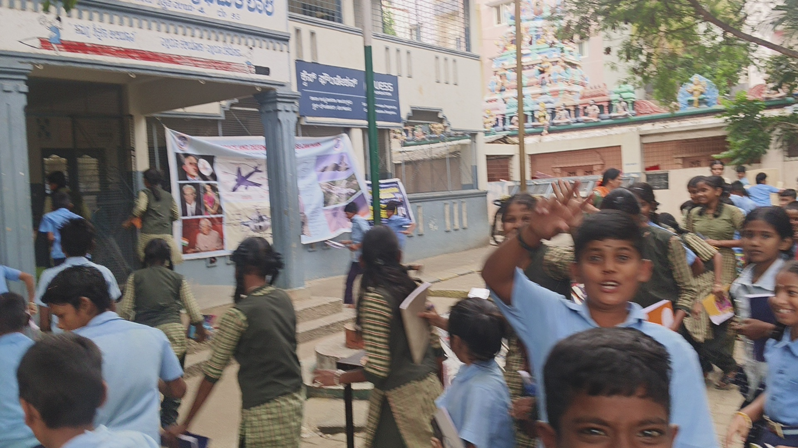
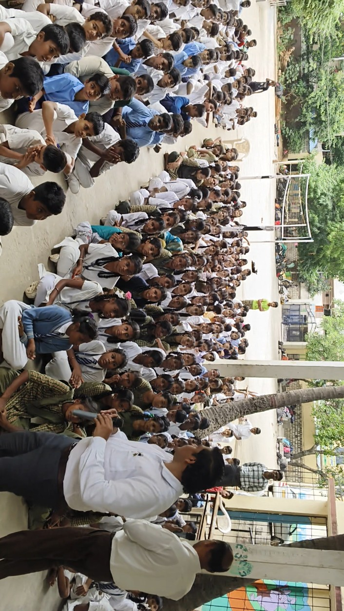

✈️ 7th Volunteer Aerospace and Defence Awareness Campaign
Academic Year: 2025–2026
📅 Date: 28th July 2025
🫠Venue: Government School, Kaggadasapura, Bengaluru
Organized by:
Shri Pradeep Laxman Savalkar
With the support of:
- ğŸ› ï¸ The Aeronautical Society of India (AeSI)
- ğŸ› ï¸ Aeronautical Development Agency (ADA), Bengaluru
🛩️ Special Talk Theme:
“Indigenous Aircraft Demonstration Activity”
Followed by an Exhibition on:
• “Indigenous Handmade 2D Aircraft Models with Micro-Detailing”
• “The Journey of India’s Indigenous LCA Tejas Aircraft”
📌 Session Highlights:
- ⏱️ Duration: 2 hours 35 minutes (2:00 PM – 4:35 PM)
- 👨‍🎓 Total Beneficiaries: 190 students
-
🨠Focus Area:
Awareness through 2D aviation art exhibition featuring key aircraft like:- LCA Tejas
- Tejas Mk2
- AMCA (Advanced Medium Combat Aircraft)
- DRDO Netra AEW&C
- ➕ And more indigenous defence platforms
-
💬 Interactive Q&A Session:
- 35-minute student interaction
- 15+ insightful questions asked, showing a strong interest in aerospace and defence topics
This 7th outreach session continues the mission of igniting curiosity, encouraging innovation, and promoting awareness of India’s indigenous aerospace capabilities among school students.
The positive response from students at Kaggadasapura Government School highlights the growing interest in aerospace and defence fields and reinforces the importance of such educational initiatives.
Photo Gallery
- 
- 
- 
- 
- 
- 
- 
- 